Introduction
Background
Over my freshman year of college I spent some spare time buying and assembling parts for a DIY electric longboard build. I wanted to do this build as DIY as I could, trying to avoid purchasing any premade kits where possible.
Looking back, I wish I had done more thorough research before I started buying parts. I ended up changing direction several times, which cost me both time and money.
.jpg)
I hope this guide helps other electric longboard builders — internet research was invaluable when I was designing my board, so I'm paying it forward. I also made some critical mistakes with the battery design that caused permanent damage. Hopefully someone can learn from those.
Motivations
I really wanted to build this from the Boosted Board / Casey Neistat craze.

Requirements
I tried to complete this build in a very DIY fashion, without the use of pre-made kits. A lot of DIY boards are mainly just a board assembled with a premade drive-train kit, battery, and electronic speed controller.
HOWEVER, if you are looking for a little more simplicity I would still HIGHLY suggest this option as buying a premade kit should ensure that there is compatibility between your parts. Keep in mind that this build took me a fair amount of time to build, although a lot of that time went into planning and design. Following this guide closely should reduce that the design time (hopefully).
Another thing to keep in mind is the cost of an electric skateboard. Here is a cost breakdown of all the parts I ended up using in the build.
| Item | Cost (USD $) |
|---|---|
| Longboard Deck | 75 |
| Wheels | 60 |
| Trucks and Bearings | 58 |
| Motor | 95 |
| ESC | 80 |
| Drive Train (gear and belt) | 20 |
| Motor Mount | 25 |
| 18650 cells (battery) | 80 |
| Vruzend Kit | 40 |
| Battery Charger | 50 |
| Grip Tape | 10 |
As you can see, this project is not cheap at all!
Board construction
Longboard, trucks, wheels
If you are doing a DIY build, you will have freedom to choose whatever longboard components you want. These are still important to your build and I suggest you invest in just as high quality longboard parts as you do with your electronic components. The parts of the longboard are as follows...
- Deck
- Trucks
- Wheels
Deck
A strong, lightweight deck will keep your build safe and secure. I think any longboard design will pretty much do (pintail, carving, drop through). Drop through decreases your availible clearance so I would be wary about building with that style unless you know your components case plus the longboard will leave several inches of clearance from the board the road (I for some reason decided to buy this deck style, and although it worked I had limited clearance)

Trucks
Your trucks are important because they provide stability and grip between your board and the road when you are cruising. They are the main factors in your turning stability as well. For e-board builds, they also serve the purpose of holding your motor mount.
I ended up buying the Caliber II trucks because they had a nice flat surface so a mount could securely be attached. If you are looking for the easiest (but most expensive) approach, you can buy kits that come with trucks so you know everything will fit together. The second easiest approach would probably be

Wheels
Wheels are crucial because of their diameter and also the material that they are made of inside. Common sizes used for electric skateboards are between 80 and 90 mm diameter. This is slightly larger than typical longboard wheels because larger wheels allow for a smoother and more stable ride.
The wheels I purchased are from Orangatang wheels. I purchased these wheels because they have a good diameter (80 mm), but main reason was they have nice holes that will come in handy later for mounting the gear system.
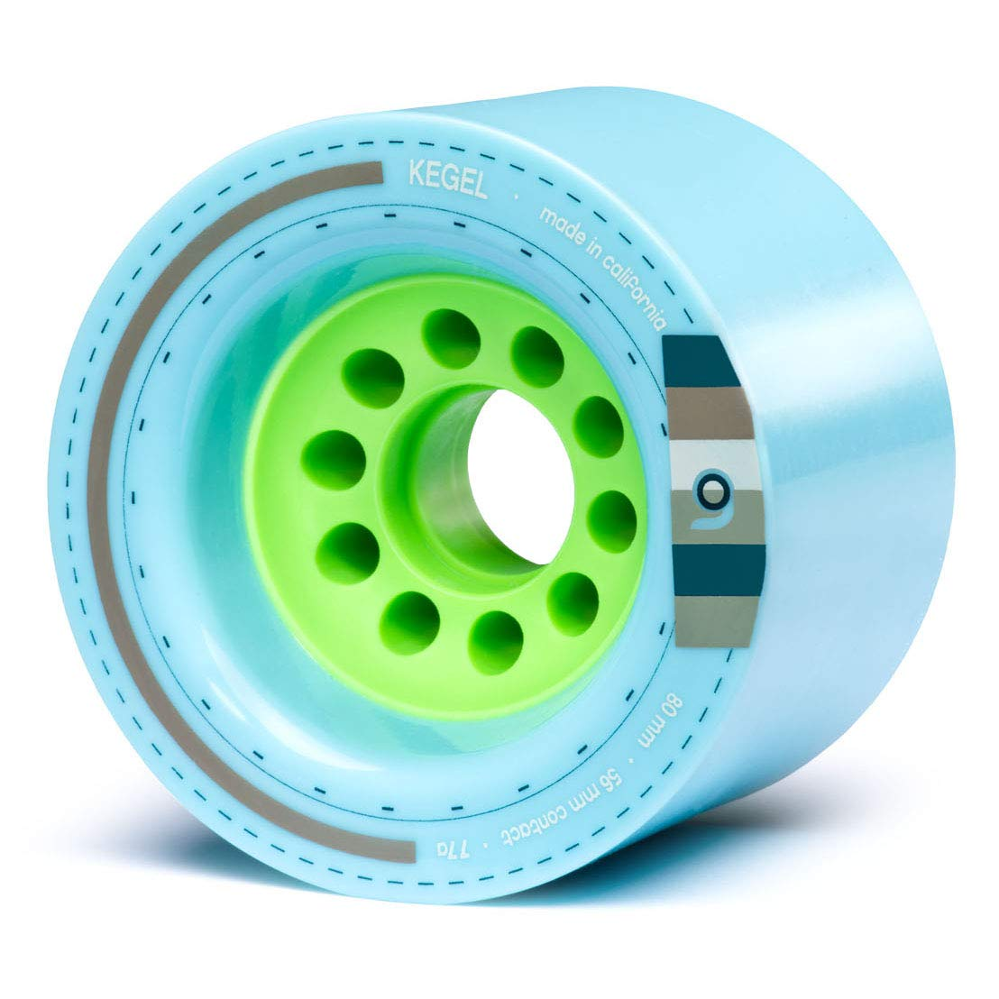
Electronics casing
I'll jump ahead in the order here slightly to discuss the final casing, housing all our electronics.
My case is constructed from fiberglass, a super strong and lightweight material. I had done some fiberglass work on my dad's car before this, so I had at least some experience. If you don't have any fiberglass experience, don't worry it is still very doable to construct but maybe do some practice before.
You can buy a premade case, but (time and money tradeoff). I think after
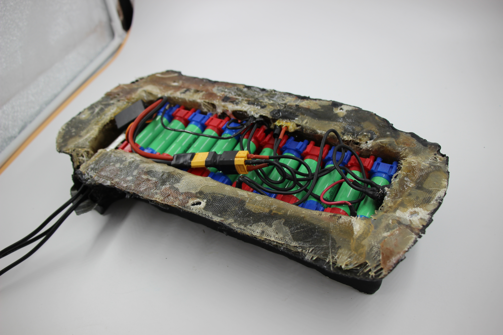
The first step in creating my case was a cardboard core. I measured the dimensions of my battery pack and constructed the cardboard cutout, leaving a little clearance for the eventual fiberglass layers. After this I laid down 2-3 layers over the whole thing, allowing a fair amount of drying time between layers. The eventual case is super sturdy and has survived multiple hard collisions with curbs!
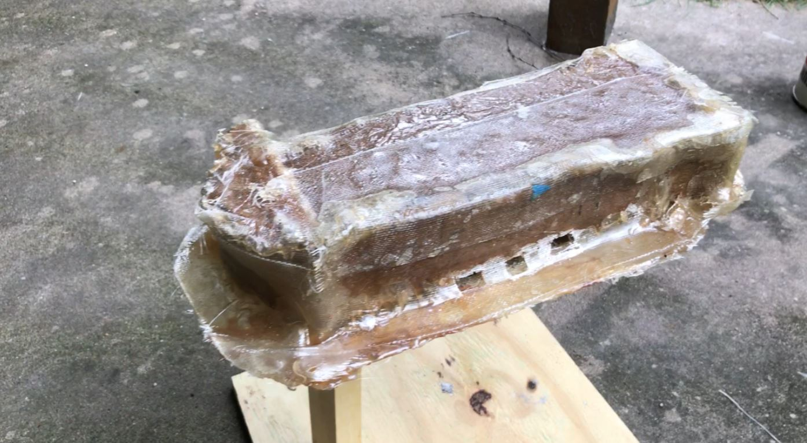
Drive train
The drive train is next. This part of the project was the most labor intensive, required a lot of going back to the drawing board, and is also a crucial part of the board! If your drivetrain is poorly built your board will be extremely unsafe.
The drivetrain itself can be separated into a few different components
- Motor mount
- Wheel gear
- Motor shaft gear
- Belt
Motor mount
The part I spent the most time on was the motor mount. I had bought the Caliber II trucks because they had a nice flat surface on one edge. My hope was that I could save some money and CNC mill my own motor mount. I was also just excited to try and mill something!
This was a lot easier said than done. I did come up with a model, but it required a little reworking to be functional and I had to go home for the summer, losing access to the machine shop at my university.
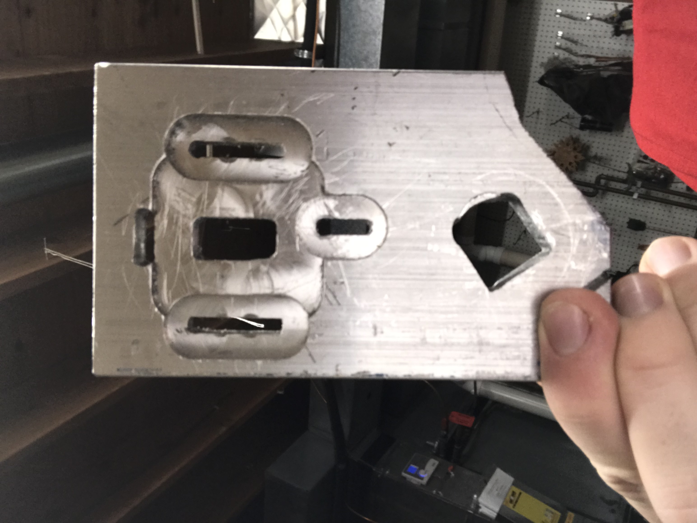
At home I spent roughly 30 minutes trying to reshape the mount with a Sawzall before realizing I needed another solution. After shopping around a bit online I found out that premade mounts for the Caliber II trucks are pretty widespread, here is an example. This is not the exact mount I bought, but it's a very similiar price and design. One VERY important note is to add Loctite to all your nuts and bolts.
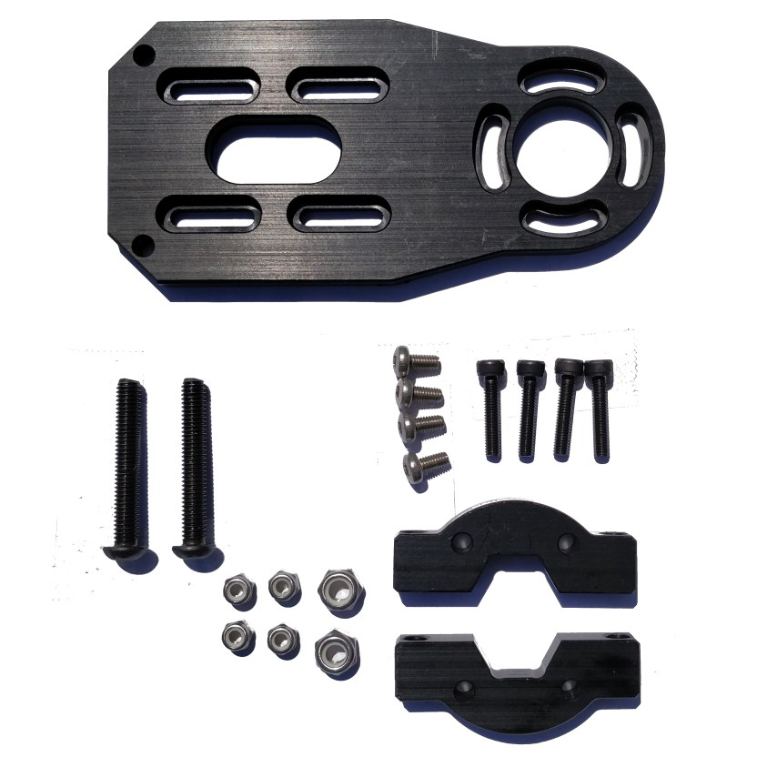
The way this mount works is one piece clamps to the trucks (lower right, two pieces), and the rest of the mount screws into that with 4 screws. It worked well with the trucks I selected.
.jpg)
You should remember when you're assembling the motor mount, gears, etc to use Loctite.
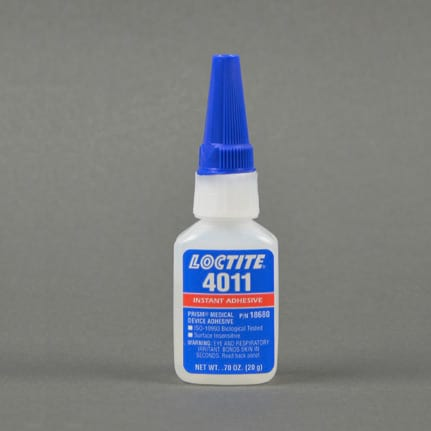
Now that the motor is secured to our trucks we can add the gears.
Gearing
There will be two gears, one mounted on the motor shaft, and the other mounted on the wheels. I already gave a sneak peak of them in previous picture of the motor mount.
Motor shaft gear
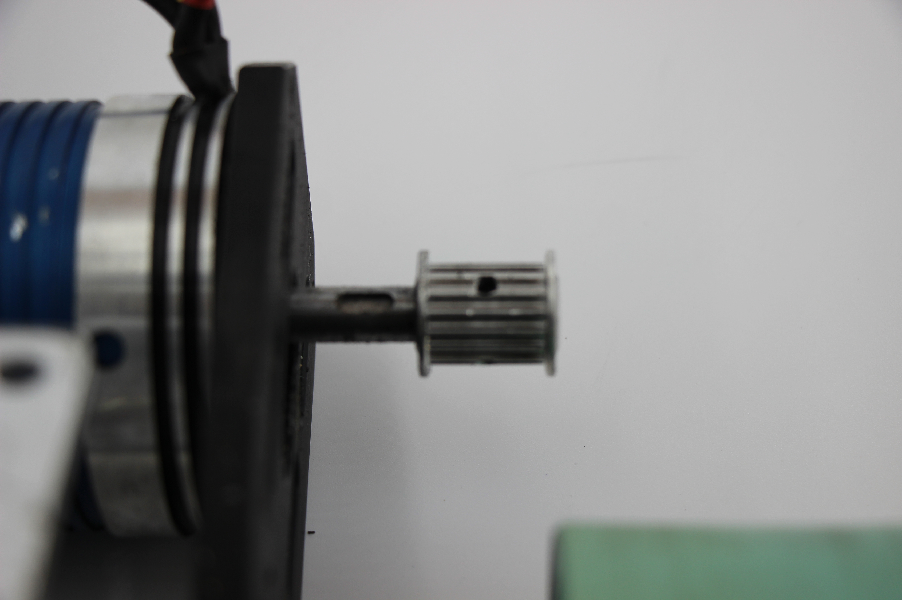
The motor gear is pretty straightforward. There will be a single set-screw (you can see the hole for it on the gear), that you will tighten down to secure it to the shaft. One thing that I had to fix was the location of the set screw "receptacle" (not sure what to call it)
You can see in this photo that for some reason the original slot was too low. I had to the shaft and mill out another slot farther up the shaft.
Drive-wheel gear
The other gear is the one mounted to your drive wheel. I talked earlier about why I chose my wheels, because they had really solid holes for mounting the gear to.
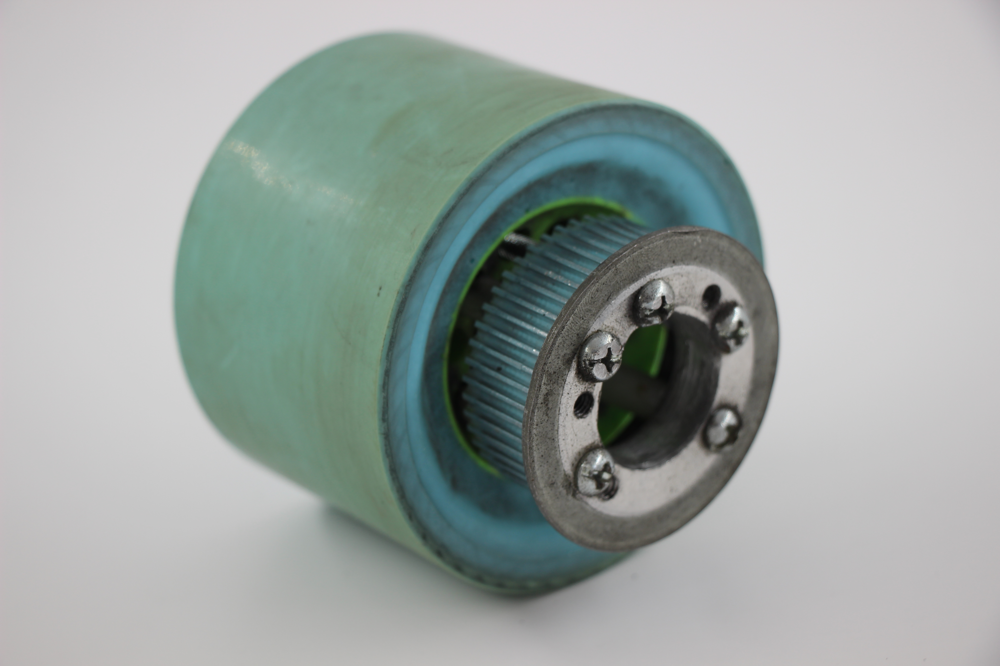
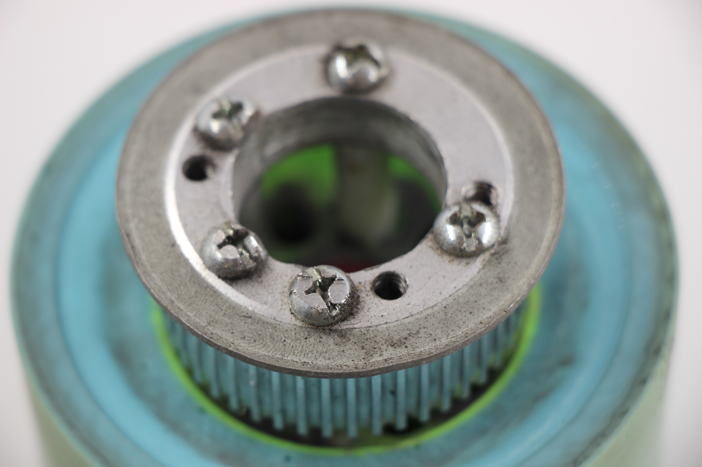
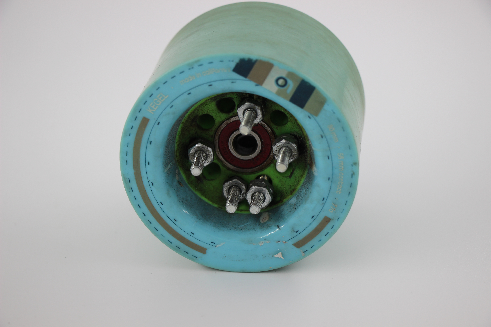
Pictures are worth 1000 words, so not much else to comment on the motor gearing.
Assembled drivetrain
Putting it all together will look something like this
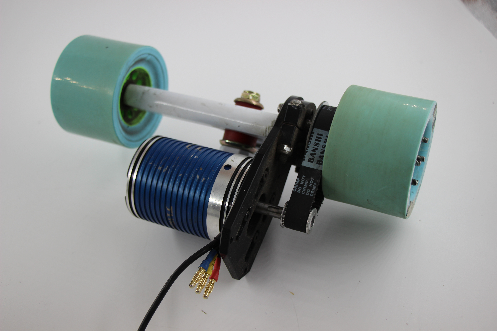
The main thing to keep in mind with assembly is
- Belt alignment / rubbing
- ensure that the belt will not rub against the side of the wheel, damaging it
- Tensioning
- ensure there is enough tension on the belt so it won't slip
Electronics
Batteries
Batteries are a crucial part of the build because they essentially determine how fast and how far you go. The type of motor you want is somewhat dependent on what kind of battery setup you have, so I personally would suggest securing your battery design and information before making a motor purchase, or at least making both purchases at the same time.
Batteries come in a few different types, but I would say only lithium types are suitable for electric longboards. Other types have disadvantages. Lead Acid and Nickel Cadmium are heavy and Nickel-Metal hybrid batteries don't last that long. Lithium is the wave to ride. Within lithium batteries the two main types are LiPo and Li-ion.
LiPo, however, have significant downsides that limit their use in commercial boards. For one, they are less safe and could start a fire if not handled properly. They also require a user to drain the battery to a specific charge for storage, so they just aren't for the everyone. On top of that, they have a shorter life-cycle compared to a Li-ion and LiFePo4 battery.
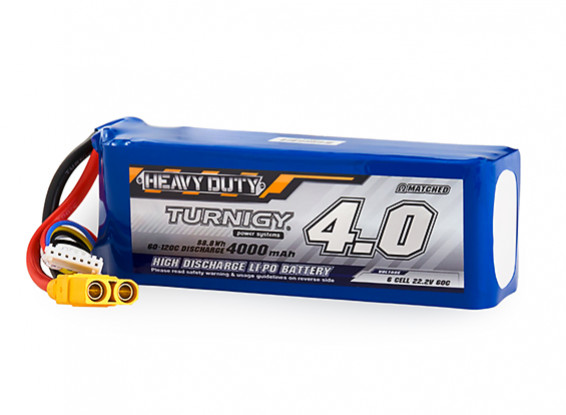
This is a picture of one of my packs in my build. It is made from 18650 cells, a very standard cell size. I bought them from here, IMR batteries.

Constructing the pack
We need a way to take these individual cells and mount them together physically, and make the needed electrical connections.
One method for making commercial packs is to weld a strip of metal together using something called a spot welder. You can read about spot welding here. Essentially it is a welding process that is very quick which is ideal for lithium-ion batteries because if you heat them up they will get damaged and lose potential charge. This is the reason we can't solder batteries, because it will heat them up too much.

I searched everywhere at my college and found a spot welder, but the terminals of it were for welding plates together and not for batteries. Here is a picture of a battery spot welder.
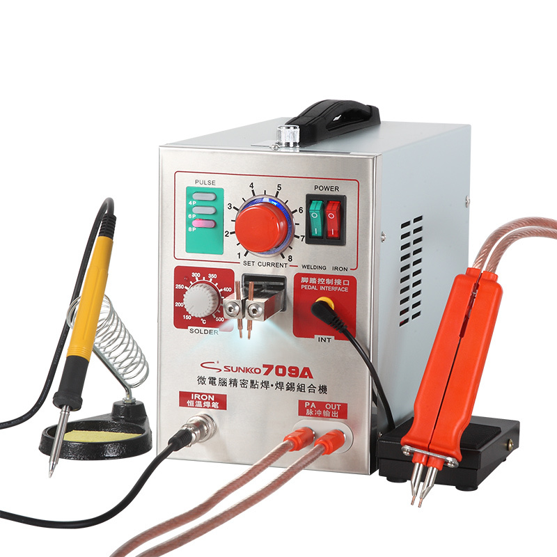
These can be bought for about $170 bucks which is money I did not have in college. My next approach was to build my own spot welder which can be done with a microwave transformer. Again, there is a tradeoff between time/money here. The reading I did about microwave transformer spot welders led me to believe that there is a lot that goes into them and more often than not they don't produce enough volts to create a good weld.
So I decided to explore other options, which led me to the practical (and colorful) solution pictured below.
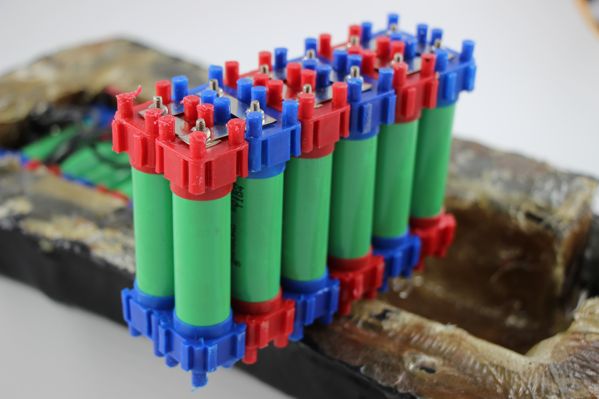
The option I decided on is a kit from a company called Vruzend. These are little plastic caps that cover each cell and have screw terminals for you to place your nickel strips. My kit cost me $35 which is a LOT less than a spot welder and saved me a ton of time, also saving my precious cells from heat damage. Looking for an even more DIY route? You can theoretically 3D print the caps that Vruzend has and create your own kit, I know there was an .STL file somewhere. I decided to just buy the kit for simplicity. Again, a tradeoff between time/money.
Series and parallel configuration
The pack in the picture is called a 6s2p pack, which means it contains 6 cells in series and then 2 in parallel, hence the 6 batteries lined up in a row with each row connected in parallel. My whole board however, uses 2 of these 6s2p packs in series to get a total of 12s2p. The reason I did this was because I had bought this charger which only can support 6 cell charging. Therefore my board has two charging ports, one for each battery. If you purchase a charger that can support a higher cell count, then go for a higher cell pack just for simplicity of wiring
BMS
I will add just a small comment on adding a BMS (if you are making a custom battery pack). I neglected to add a BMS because I was an inexperienced little engineer when I made this, and it eventually ruined my battery cells.
Electronic speed controller
I didn't do too much research into speed controllers. I know they are POSSIBLE to build by yourself, but I thought the time would be a lot. I ended up buying a 4.12 VESC from HobbyKing. The VESC I bought is compatible with software that has a lot of settings suitable for electric longboard riding. You can grab that software here.
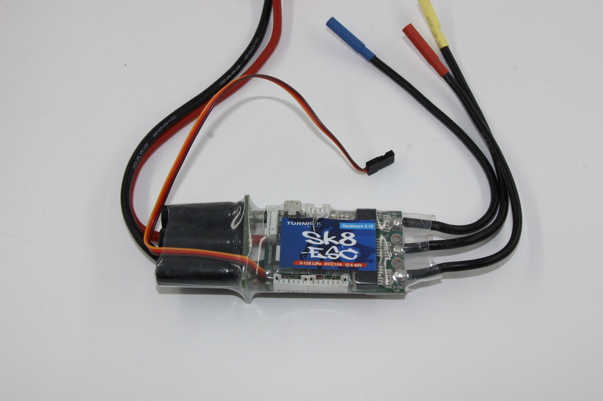
They are pretty simple to use. The colorful (blue, red, yellow) pins connect to your motor. The black and red wires connect to your battery pack. And the other wire connects to your remote transceiver. You can then plug in a USB to adjust settings through software.
The VESC worked well enough, but I do have to say that one time after adjusting the settings on my VESC my motor started spinning out of control and I ended up burning the DRV8302 chip on the VESC. Had to buy a second one which is working great.
You will also have to buy a remote control. These must have some standard protocol, because I purchased a cheap one from Aliexpress and it worked. It will come with a receiver that you plug into the VESC.
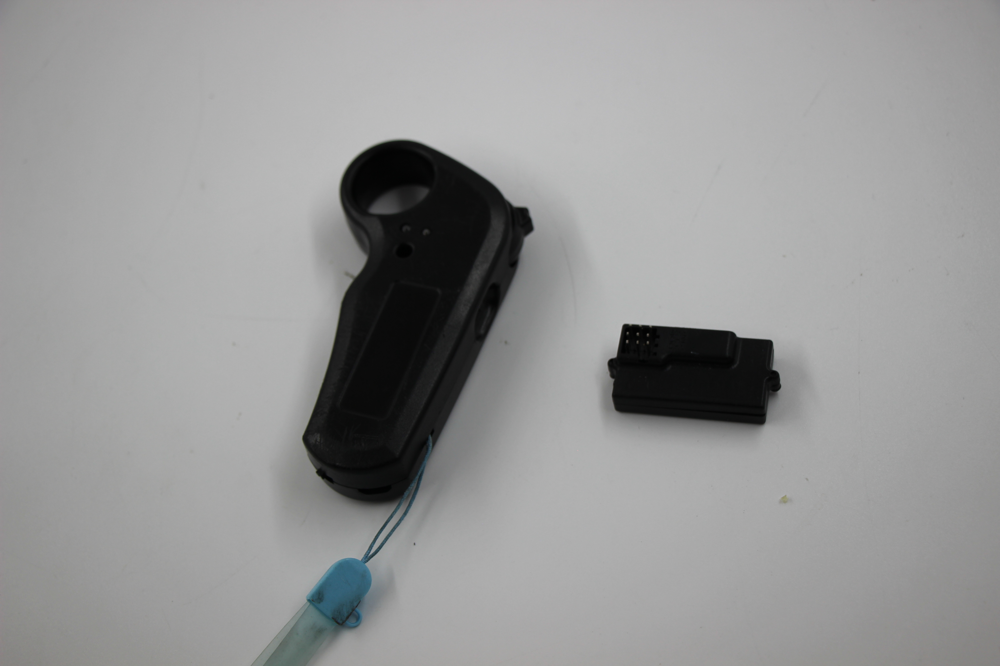
That pretty much sums it up for electronics.
The final product
I've talked enough in this article so here's just some pics showcasing the final product!
 1.jpg)
.jpg)
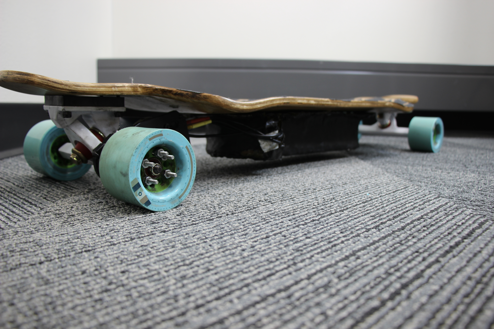
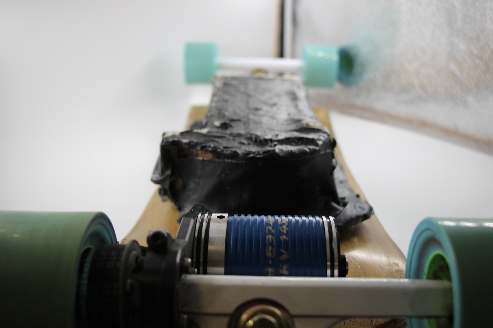
Conclusion
This project fills me with a lot of pride. I remember the moment I got my motor to spin, installing the component case, the first test ride. I think it's beautiful that an idea in my brain is now a real, functional thing. This was also one of my first expensive, complex projects so it taught me a lot about the need for documentation, clear planning, and everything else that comes along with larger projects.
The board is no longer-functional and it's parts have completely been dismantled and harvested. The main reason the project got killed was because I did not put a BMS on my battery pack, and discharged the cells below 2 volts. BAD!
I hope this guide helps anyone else with their build!